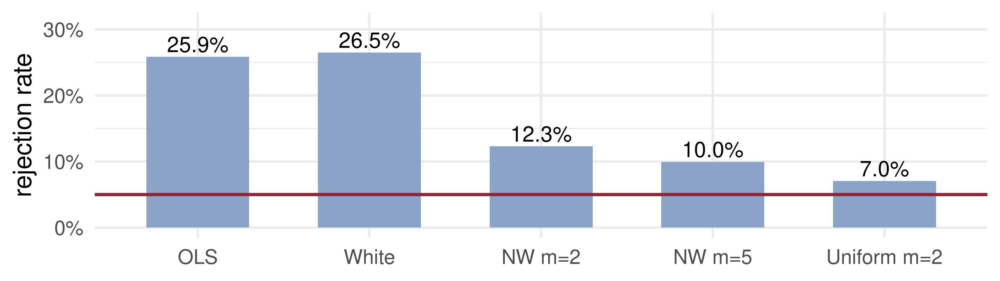
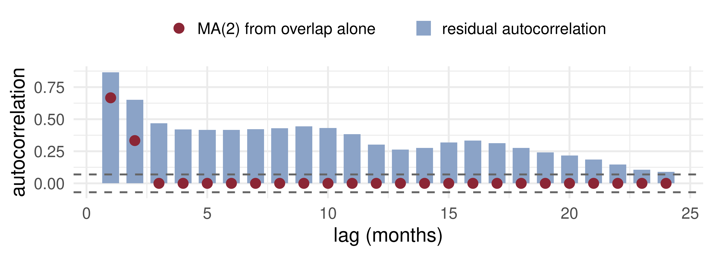

Lecture 3: Time-Series Regression and HAC Inference
Open lecture notes, after Stanislav Anatolyev’s course (2016)
⬅ Previous lecture: 2 · Ergodic Theorem, CLT and the Long-Run Variance
A short film with the intuition. Watch it before the slides, or after. Captions: CC button.
By the end of this lecture, you will be able to:
\(x_t\) is a stationary ergodic martingale difference sequence with \(\operatorname{Var}x_t = \sigma^2\). What is its long-run variance \(V_x = \sum_j\Gamma_j\)?
Lecture 2 ended with the long-run variance \(V_x = \sum_j\Gamma_j\) and its kernel estimators: truncate, down-weight, let the bandwidth grow slowly.
We used it for a single mean. Today the same object appears in regression. The OLS estimator is a ratio of two sample averages; the denominator obeys the ergodic theorem, the numerator obeys the CLT, and its variance is the long-run variance of \(x_t\varepsilon_t\).
The practical question becomes: when is \(x_t\varepsilon_t\) an MDS, so that the simple formulas are right, and when do we need HAC?
Does the T-bill rate know future inflation?
The Fisher equation says the nominal rate is a real rate plus expected inflation, \(i_t = r + E_t\pi\). If the real rate is roughly stable, today’s 3-month Treasury-bill rate should forecast inflation over the next three months.
Mishkin (1990) tested this by regressing future inflation on today’s interest rate. The point estimate is easy. The standard error is not: with monthly data and a three-month horizon, consecutive forecast errors overlap, and the textbook OLS standard error is wrong.
\[y_t = x_t'\beta + \varepsilon_t, \qquad t = 1, \dots, T.\]
Assumptions
Then OLS is applicable: it is consistent and asymptotically normal. Its standard errors must sometimes be HAC — when \(x_t\varepsilon_t\) is serially correlated. When it is not, they need not be.
Substitute \(y_t = x_t'\beta + \varepsilon_t\) into \(\hat\beta = (X'X)^{-1}X'y\): \[\sqrt T(\hat\beta - \beta) = \Big(\frac1T\sum_{t=1}^{T}x_tx_t'\Big)^{-1}\ \frac{1}{\sqrt T}\sum_{t=1}^{T}x_t\varepsilon_t.\]
Combine them (Slutsky): \[\sqrt T(\hat\beta - \beta) \xrightarrow{d} N\big(0,\ Q^{-1}VQ^{-1}\big).\] The “sandwich”: \(Q^{-1}\) is the bread, the long-run variance \(V\) the filling.
Suppose the error is an MDS with respect to everything dated \(t\) and earlier, regressors included: \[E(\varepsilon_t \mid x_t, x_{t-1}, \dots,\ \varepsilon_{t-1}, \varepsilon_{t-2}, \dots) = 0.\]
Then \(g_t = x_t\varepsilon_t\) is an MDS too. For \(j \ge 1\), everything in \(g_{t-j}\) and \(x_t\) is in the conditioning set, so \[E(g_tg_{t-j}') = E\big[x_t\,E(\varepsilon_t \mid \dots)\,g_{t-j}'\big] = 0.\] Only \(\Gamma_0(g) = E(\varepsilon_t^2x_tx_t')\) survives: the short-run variance.
With residuals \(\hat e_t = y_t - x_t'\hat\beta\): \[\hat V_{OLS} = \Big(\frac{X'X}{T}\Big)^{-1}\ \hat V_{HAC}\ \Big(\frac{X'X}{T}\Big)^{-1}, \qquad \hat V_{HAC} = \sum_{j=-(T-1)}^{T-1}K\Big(\frac{j}{\delta}\Big)\hat\Gamma_j(x_t\hat e_t),\] \[\hat\Gamma_j(x_t\hat e_t) = \frac1T\sum_{t=1}^{T-j}\hat e_t\,\hat e_{t+j}\,x_t\,x_{t+j}', \quad j \ge 0, \qquad \hat\Gamma_{-j} = \hat\Gamma_j'.\]
Predict next month’s inflation by this month’s one-month interest rate \(i_t\): \[\pi_{t+1} = \alpha + \beta\,i_t + e_{t+1}, \qquad E(e_{t+1} \mid i_t, i_{t-1}, \dots, \pi_t, \pi_{t-1}, \dots) = 0.\]
The error is an MDS with respect to the information at \(t\), which contains \(e_t, e_{t-1}, \dots\). So it is serially uncorrelated: HAC is not necessary; the short-run variance (White) suffices.
With monthly data, predict inflation over the next three months by the three-month rate \(i_{t,3}\): \[\pi_{t,3} = \alpha + \beta\,i_{t,3} + e_{t+3}, \qquad E\big[e_{t+3} \mid i_{t,3}, \pi_t, \pi_{t-1}, \dots\big] = 0.\]
The error is unpredictable at \(t\), but it is not known until \(t+3\). Let \(\eta_{s}\) be the inflation news that arrives in month \(s\) (an MDS). Then, roughly, \[e_{t+3} = \eta_{t+1} + \eta_{t+2} + \eta_{t+3}, \qquad e_{t+4} = \eta_{t+2} + \eta_{t+3} + \eta_{t+4}.\] Neighbouring errors share two months of news; errors two months apart share one; three apart, none.
So \(e_{t+3}\) is MA(2). OLS is still consistent, since \(E(i_{t,3}e_{t+3}) = 0\), but HAC is needed, with truncation lag at least 2.
Take \(\operatorname{Var}\eta_s = \sigma^2\) and count shared months: \[\Gamma_0(e) = 3\sigma^2, \quad \Gamma_1(e) = 2\sigma^2, \quad \Gamma_2(e) = \sigma^2, \quad \Gamma_j(e) = 0 \ (j \ge 3).\] Autocorrelations \(\tfrac23, \tfrac13, 0\): a triangle.
For an intercept-only regression: \[V = 3\sigma^2 + 2(2\sigma^2 + \sigma^2) = 9\sigma^2 = 3\,\Gamma_0(e).\] The OLS standard error is too small by \(\sqrt3 \approx 1.73\).
acf_data = {
const T = 600, rng = d3.randomNormal.source(d3.randomLcg(0.3))(0, 1);
const eta = Array.from({length: T + h}, () => rng());
const e = Array.from({length: T}, (_, t) => d3.sum(eta.slice(t, t + h)));
const m = d3.mean(e), c0 = d3.sum(e, v => (v - m) ** 2);
const out = [];
for (let j = 0; j <= 15; j++) {
let c = 0; for (let t = 0; t < T - j; t++) c += (e[t] - m) * (e[t + j] - m);
out.push({lag: j, theory: Math.max(1 - j / h, 0), sample: c / c0});
}
return out;
}Plot.plot({
width: 1100, height: 290, marginLeft: 78, marginBottom: 50,
style: {fontSize: "18px"},
x: {label: "lag j", domain: d3.range(0, 16), padding: 0.25},
y: {label: "autocorrelation", domain: [-0.2, 1.05], grid: true},
marks: [
Plot.barY(acf_data, {x: "lag", y: "theory", fill: "#8ba3c7"}),
Plot.dot(acf_data, {x: "lag", y: "sample", fill: "#8b2635", r: 7}),
Plot.ruleY([0])
]
})Bars: theory, \(1 - j/h\) up to lag \(h-1\). Red dots: one simulated sample of \(T = 600\) months. The long-run variance is \(h\) times \(\Gamma_0(e)\): at \(h = 12\) the OLS standard error of a mean is too small by \(\sqrt{12} \approx 3.5\).
set.seed(2026)
hac_se <- function(X, e, m, uniform = FALSE) { # sandwich SE, Bartlett or uniform kernel
n <- nrow(X); g <- X * e; S <- crossprod(g) / n
for (j in seq_len(m)) { w <- if (uniform) 1 else 1 - j / (m + 1)
G <- crossprod(g[(1 + j):n, , drop = FALSE], g[1:(n - j), , drop = FALSE]) / n
S <- S + w * (G + t(G)) }
Qi <- solve(crossprod(X) / n); sqrt(diag(Qi %*% S %*% Qi) / n) }
n <- 300; R <- 2000
rej <- replicate(R, {
eta <- rnorm(n + 3); y <- eta[2:(n + 1)] + eta[3:(n + 2)] + eta[4:(n + 3)] # 3-month overlap, beta = 0
x <- as.numeric(filter(rnorm(n), 0.95, "recursive")); X <- cbind(1, x) # persistent "interest rate"
b <- solve(crossprod(X), crossprod(X, y)); e <- as.numeric(y - X %*% b)
se <- c(OLS = sqrt(sum(e^2) / (n - 2) * solve(crossprod(X))[2, 2]), White = hac_se(X, e, 0)[[2]],
`NW m=2` = hac_se(X, e, 2)[[2]], `NW m=5` = hac_se(X, e, 5)[[2]], `Uniform m=2` = hac_se(X, e, 2, TRUE)[[2]])
abs(b[2] / se) > 1.96 })
rate <- rowMeans(rej, na.rm = TRUE)
ggplot(data.frame(se = factor(names(rate), names(rate)), rate), aes(se, rate)) +
geom_col(fill = "#8ba3c7", width = 0.6) + geom_hline(yintercept = 0.05, colour = "#8b2635", linewidth = 1.2) +
geom_text(aes(label = sprintf("%.1f%%", 100 * rate)), vjust = -0.3, size = 6) +
scale_y_continuous(labels = scales::percent, limits = c(0, 0.31)) + labs(x = NULL, y = "rejection rate") +
theme_minimal(base_size = 20)
True \(\beta = 0\), nominal size 5% (red). OLS and White reject about a quarter of the time. HAC brings it down; with \(T = 300\) and a persistent regressor it is not yet 5%.
A central bank regresses next year’s inflation on today’s one-year rate, using monthly data: \[\pi_{t,12} = \alpha + \beta\,i_{t,12} + e_{t+12}, \qquad E(e_{t+12} \mid \text{information at } t) = 0.\]
📈 The question
Does the 3-month T-bill rate predict inflation over the next three months?
📊 The data
Series: CPI (FRED CPIAUCSL), 3-month T-bill rate (FRED TB3MS)
Period: Jan 1960 – Jun 2026, monthly, \(T = 798\)
Variables: \(\pi_{t,3} = 400\,(\log P_{t+3} - \log P_t)\), annualised %; \(i_{t,3}\) = T-bill rate, %
d <- merge(read.csv("data/CPIAUCSL.csv"), read.csv("data/TB3MS.csv"), by = "observation_date")
lp <- log(d$CPIAUCSL); g <- which(is.na(lp)); lp[g] <- (lp[g - 1] + lp[g + 1]) / 2 # Oct 2025 CPI not published
n0 <- nrow(d); pi3 <- 400 * (c(lp[4:n0], rep(NA, 3)) - lp) # inflation over t..t+3
dat <- na.omit(data.frame(date = as.Date(d$observation_date), pi3, i = d$TB3MS))
dat <- dat[dat$date >= as.Date("1960-01-01"), ]
X <- cbind(1, dat$i); y <- dat$pi3; n <- nrow(X)
b <- solve(crossprod(X), crossprod(X, y)); e <- as.numeric(y - X %*% b)
se <- cbind(OLS = sqrt(diag(sum(e^2) / (n - 2) * solve(crossprod(X)))), White = hac_se(X, e, 0),
`NW m=2` = hac_se(X, e, 2), `NW m=12` = hac_se(X, e, 12))
fit <- lm(pi3 ~ i, dat) # cross-check with sandwich
stopifnot(all.equal(unname(se[, 4]), unname(sqrt(diag(sandwich::NeweyWest(fit, lag = 12, prewhite = FALSE, adjust = FALSE))))))
tab <- rbind(estimate = c(b, NA, NA),
cbind(t(se), `t(beta=0)` = b[2] / se[2, ], `t(beta=1)` = (b[2] - 1) / se[2, ]))
dimnames(tab) <- list(c("estimate", paste("se", colnames(se))), c("alpha", "beta", "t(beta=0)", "t(beta=1)"))
round(tab, 3) alpha beta t(beta=0) t(beta=1)
estimate 1.384 0.520 NA NA
se OLS 0.165 0.031 16.918 -15.606
se White 0.183 0.039 13.334 -12.300
se NW m=2 0.290 0.063 8.225 -7.587
se NW m=12 0.448 0.108 4.825 -4.451
What the data say: \(\hat\beta \approx 0.52\) — the T-bill rate does carry information about inflation (\(\beta = 0\) rejected under every standard error), but it is not an unbiased predictor (\(\beta = 1\) rejected too). The Newey–West standard errors are two (\(m = 2\)) to three and a half (\(m = 12\)) times the OLS ones. The residuals fit MA(2) only at lags 1–2: beyond that they stay near 0.4 for two years. The rate alone leaves predictable, persistent inflation in the error, so even \(m = 12\) may be too short, and a regression with lagged inflation is the better model.
| Structural | Non-structural | |
|---|---|---|
| Starting point | economic theory, optimally behaving agents | data fit |
| Goal | estimate and test deep parameters with economic meaning (GMM) | stylised facts; forecasts, dynamics |
| Example | consumption Euler equation | GNP growth properties; AR-ARCH-M for returns |
Structural example. A consumer with CRRA utility and discount factor \(\beta\) sets \[E_t\Big[\beta\Big(\frac{c_t}{c_{t+1}}\Big)^{\gamma}R_{t+1} - 1\Big] = 0.\] A moment condition, not a regression: GMM estimates and tests the deep parameters \((\beta, \gamma)\).
\[r_t = c + \rho\,r_{t-1} + \delta\,\sigma_t^2 + \varepsilon_t, \qquad \varepsilon_t \mid I_{t-1} \sim (0, \sigma_t^2), \qquad \sigma_t^2 = \omega + \alpha\,\varepsilon_{t-1}^2,\] with \(\omega > 0\), \(\alpha \ge 0\).
No utility function is written down, yet the model captures the stylised facts of Lecture 1’s case study. It returns in Lecture 15.
\(y_{t+1} = \alpha + \beta x_t + e_{t+1}\) with monthly data and \(E(e_{t+1} \mid x_t, x_{t-1}, \dots, y_t, y_{t-1}, \dots) = 0\), but \(E(e_{t+1}^2 \mid x_t)\) varies with \(x_t\). Which standard errors are appropriate?
With quarterly data you regress output growth over the next four quarters on today’s term spread. Under the null of no predictability, the regression error is …
Why can you not use \(\sum_{j=-(T-1)}^{T-1}\hat\Gamma_j(x_t\hat e_t)\) as the middle of the sandwich?
| OLS limit | \(\sqrt T(\hat\beta - \beta) \xrightarrow{d} N(0, Q^{-1}VQ^{-1})\), \(Q = E x_tx_t'\), \(V = \sum_j\Gamma_j(x_t\varepsilon_t)\) |
| MDS errors | \(V = E(\varepsilon_t^2x_tx_t')\) (White); homoskedastic: \(V = \sigma^2Q\) |
| HAC sandwich | \(\hat V_{OLS} = (X'X/T)^{-1}\sum_j K(j/\delta)\hat\Gamma_j(x_t\hat e_t)(X'X/T)^{-1}\) |
| Standard errors | \(\widehat{\operatorname{Var}}(\hat\beta) = \hat V_{OLS}/T\) |
| \(h\)-period overlap | \(e\) is MA(\(h-1\)), \(\ \Gamma_j(e) \propto h - \lvert j\rvert\), \(\ V/\Gamma_0(e) = h\) |
| Mishkin | \(\pi_{t,3} = \alpha + \beta i_{t,3} + e_{t+3}\); test \(\beta = 0\) and \((\alpha, \beta) = (0, 1)\) |
Next lecture: What to Model, and How to Choose a Model — conditional means, variances and quantiles as objects of modelling, and information criteria for choosing among models.
Time Series Econometrics — Time-Series Regression and HAC